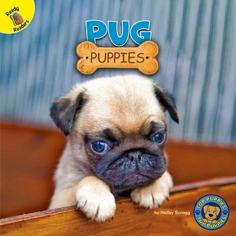
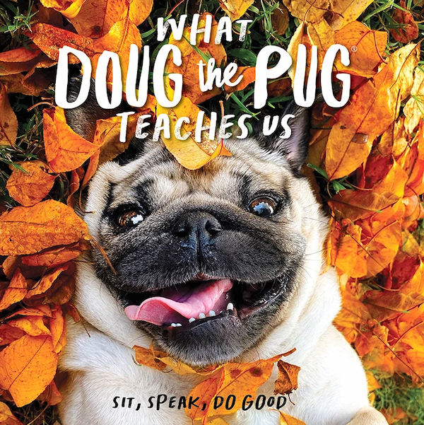
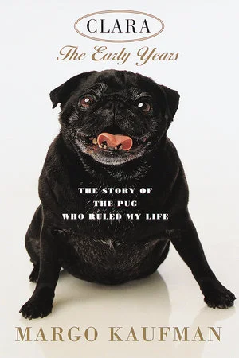
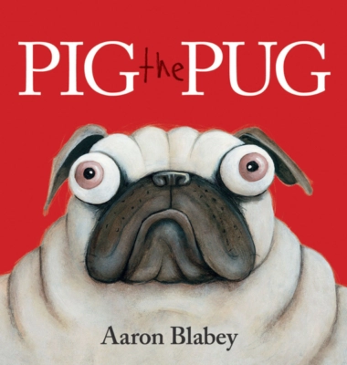
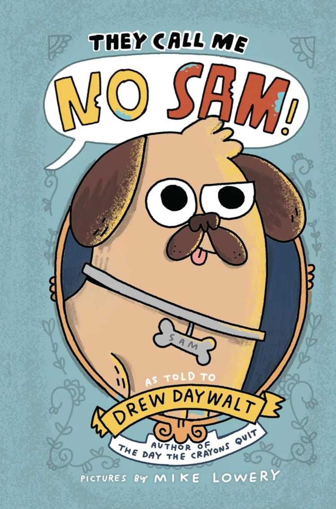

Everything about the purchase, care, nutrition, behavior, and training of your Pug.
Pugs will communicate with vocalizations and body language from an early age.

Readers age 2-5. Find out what Pug puppies look like and act like.
Pugs are loving, playful, and curious; eager for an adventure, but quickly loose stamina.

Famous viral Pug, Doug, shares messages of humor, love, and
acceptance.
Pugs form strong emotional bonds with their human companions.

A humerous memoir by Margo Kaufman, who shares how her Pugs Clara and Sophie helped her through
infertility and
adoption.
Pugs rule the household.

Ages 0+. (Picture books are for everyone!) Pig the Pug, is alternately selfish and friendly.
Pugs are known for their sometimes stubborn behavior.

Readers age 8-12. Humerous graphic novel details the story of Sam, insolent pug and incidental
hero, who saves his family from thieves, and the brain-meting heat cannon."